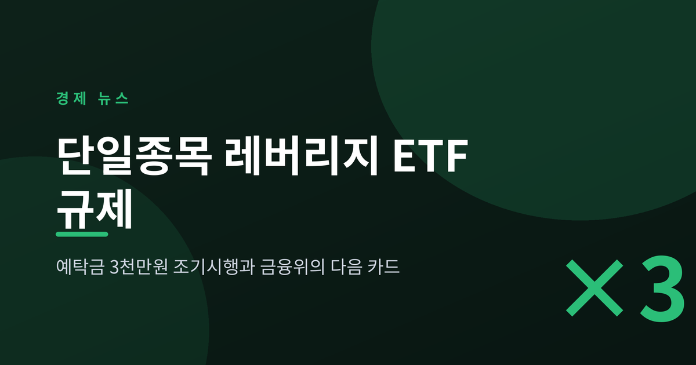
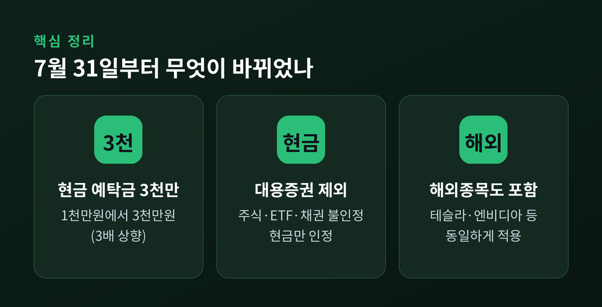
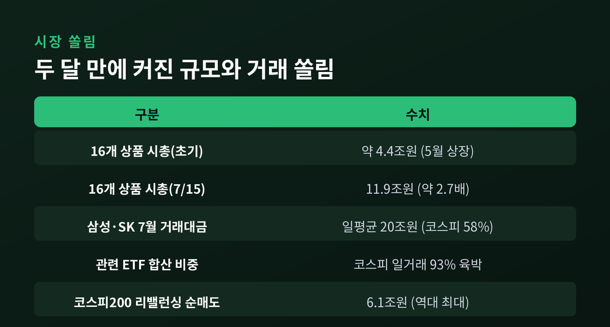
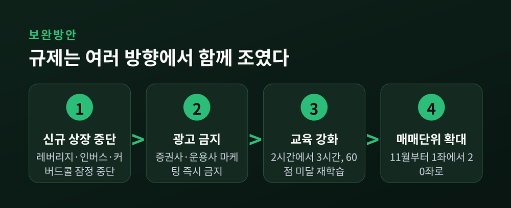
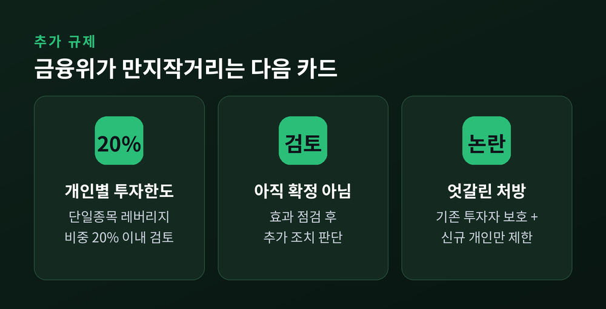
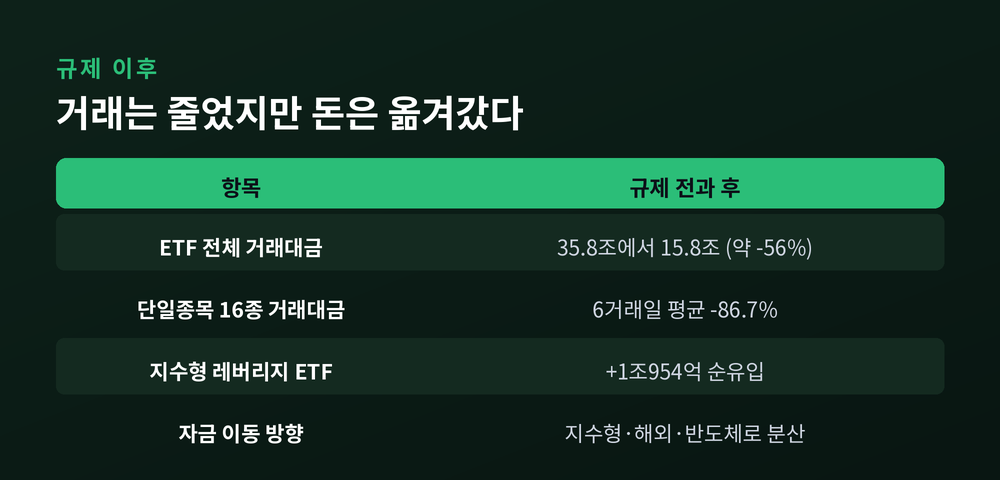

이번 글에서는 2026년 여름 증시를 흔든 단일종목 레버리지 ETF 규제를 정리해 보겠습니다.
현금 3,000만원이 있어야 살 수 있게 된 상품, 그 배경과 앞으로의 규제 방향을 차례로 짚어봅니다.
먼저 한 가지만 짚고 시작합니다. 이 글은 정보 전달을 위한 정리이며, 특정 상품의 매수나 매도를 권하는 투자 권유가 아닙니다.

먼저 이 상품이 무엇인지 짚고 가겠습니다.
단일종목 레버리지 상품은 삼성전자나 SK하이닉스 같은 한 종목의 하루 등락을 두 배로 좇는 ETF·ETN입니다.
오르면 두 배로 벌고, 내리면 두 배로 잃습니다.
그만큼 변동이 크고, 위험도 그만큼 큽니다.
2026년 7월 31일부터 규칙이 바뀌었습니다.
이 상품을 새로 사거나 더 사려면, 계좌에 현금 3,000만원 이상이 있어야 합니다.
기존 기본예탁금은 1,000만원이었습니다.
이번에 세 배로 올랐습니다.
여기서 핵심은 '현금'이라는 점입니다.
보유한 주식이나 ETF, 채권 같은 대용증권은 예탁금으로 쳐주지 않습니다.
주식을 판 돈도 결제가 끝나는 T+2일 이후에야 현금으로 인정됩니다.
매도대금을 담보로 받은 대출금 역시 예탁금에서 빠집니다.
빚을 내 문턱을 넘는 길까지 막아둔 셈입니다.
미성년자의 신규 거래도 이번에 함께 제한됐습니다.
적용 범위도 넓습니다.
삼성전자·SK하이닉스를 기초로 한 국내 상품만이 아니라, 테슬라·엔비디아 같은 해외 종목을 기초로 한 레버리지 ETF·ETN에도 똑같이 적용됩니다.
원래 이 조치는 8월 초와 중순으로 나뉘어 시행될 예정이었습니다.
그런데 자금이 너무 빠르게 몰리자, 금융위원회는 일정을 앞당겨 7월 31일 하루에 모두 시행했습니다.
'조기 시행'이라는 표현이 붙은 이유입니다.

숫자를 보면 이유가 분명해집니다.
2026년 5월 상장된 16개 단일종목 레버리지 상품의 시가총액은 초기 4.4조원 안팎이었습니다.
그것이 7월 15일에는 11.9조원까지 불어났습니다.
두 달 만에 약 2.7배로 커진 셈입니다.
이미 출발선부터 과열이었습니다.
상장 첫날인 5월 27일, 합산 시총 4.9조원에 거래대금은 10.4조원이 몰렸습니다.
새 상품이 나오자마자 단타 자금이 밀려든 것입니다.
거래 쏠림은 더 극적입니다.
신한투자증권 분석에 따르면, 7월 삼성전자와 SK하이닉스의 하루 평균 거래대금은 20조원으로 코스피 전체의 58%를 차지했습니다.
여기에 관련 레버리지 ETF까지 더하면, 7월 코스피 하루 거래액의 93%에 육박했습니다.
특정 두 종목과 그 파생 상품이 시장 전체를 좌우한 것입니다.
게다가 코스피200을 기초로 한 레버리지·인버스 ETF의 7월 리밸런싱 순매도는 6조1,000억원으로 역대 최대 수준으로 추산됐습니다.
지수 자체의 출렁임이 커진다는 우려가 나온 배경입니다.
'롤러코스피'라는 말이 괜히 나온 것이 아닙니다.

예탁금 상향은 보완방안 패키지의 한 조각입니다.
금융위와 관계기관은 7월 16일 여러 조치를 함께 내놨습니다.
첫째, 신규 상장을 잠정 중단했습니다.
레버리지뿐 아니라 인버스와 커버드콜을 포함한 단일종목 관련 상품이 대상입니다.
둘째, 증권사와 운용사의 광고·이벤트성 마케팅을 즉시 금지했습니다.
셋째, 투자자 교육을 강화했습니다.
기존 2시간 교육에 사례 중심 심화교육 1시간을 더해 총 3시간으로 늘렸습니다.
중간평가에서 60점에 못 미치면 해당 챕터를 다시 들어야 합니다.
넷째, 국내 상품의 매매수량 단위를 11월부터 1좌에서 20좌로 넓힙니다.
소액으로 잦게 사고파는 단타를 누르려는 장치입니다.
여기에 교육의 무게도 더했습니다.
중간평가에서 60점에 못 미치면 해당 챕터를 다시 들어야 하니, 형식적인 이수만으로는 문턱을 넘기 어렵습니다.
한 번에 여러 방향에서 조인 것입니다.
쉽게 들어와 쉽게 잃던 구조를, 문턱을 높여 잠시 멈춰 세우려는 의도로 읽힙니다.

금융위는 여기서 멈추지 않았습니다.
이억원 금융위원장은 7월 28일 금융투자협회 간담회에서 신중한 태도를 보였습니다.
"7월 31일부터 시행되는 보완 방안의 정책 효과를 우선 면밀히 점검하겠다"고 했습니다.
다만 "수요가 충분히 진정되지 않을 경우 추가 조치도 미리 검토·준비하겠다"고 덧붙였습니다.
가장 유력하게 거론되는 카드는 개인별 투자한도입니다.
전체 금융투자상품 가운데 단일종목 레버리지 비중을 한 사람당 20% 이내로 제한하는 방안입니다.
다만 이 한도는 아직 확정된 규칙이 아니라 검토 단계입니다.
쟁점도 있습니다.
상장폐지는 막아 기존 투자자를 보호하면서, 신규 진입하는 개인만 조인다는 '엇갈린 처방' 논란이 그것입니다.
투자자 보호와 시장 자율 사이의 균형은 여전히 풀어야 할 숙제로 남아 있습니다.

효과는 빠르게 나타났습니다.
7월 30일 35조7,758억원이던 ETF 전체 거래대금은 8월 6일 15조8,369억원으로 약 56% 줄었습니다.
단일종목 레버리지·인버스 16종만 보면, 규제 후 6거래일 평균 거래대금이 직전 6거래일 대비 86.7% 급감했습니다.
과열은 분명히 가라앉았습니다.
그러나 돈이 사라진 것은 아닙니다.
같은 기간 코스피200·코스닥150 지수형 레버리지 ETF에는 1조954억원이 순유입됐습니다.
막힌 물길이 지수형 상품과 해외 상장 상품, 반도체 섹터 쪽으로 옮겨가는 '풍선효과'가 감지된 것입니다.
한편에서는 신규 상장 중단과 마케팅 금지로 ETF 시장 전반이 위축될 수 있다는 지적도 나옵니다.
새 상품이 나오지 못하니 투자자의 선택지가 좁아진다는 우려입니다.
예전엔 개별 종목 레버리지로 몰렸던 자금이, 지금은 지수형과 해외 상품으로 흩어지는 모습입니다.
규제가 위험 자체를 없앴다기보다, 위험의 위치를 옮겼다고 보는 편이 정확할지도 모릅니다.
금융위도 이 점을 알고 있습니다.
그래서 8월 이후 정책 효과를 지켜본 뒤, 과열이 다시 고개를 들면 개인별 투자한도 카드를 꺼내겠다는 입장입니다.
당분간은 '지켜보기'의 시간입니다.

정리하면 이렇습니다.
금융위는 단일종목 레버리지 상품의 과열을 잡기 위해 예탁금을 세 배로 올렸고, 광고와 신규 상장을 막았으며, 다음 카드로 개인별 투자한도까지 만지작거리고 있습니다.
거래대금은 확실히 줄었지만, 자금은 다른 상품으로 옮겨가는 중입니다.
숫자는 가라앉았어도, 쏠림의 뿌리가 뽑혔는지는 아직 단정하기 이릅니다.
결국 남는 질문은 하나입니다.
"규제는 위험을 줄였는가, 아니면 옮겼을 뿐인가."
당분간 시장은 이 물음에 답을 찾아가는 과정이 될 것입니다.
그리고 그 답이 나오기 전까지, 레버리지라는 도구의 무게를 스스로 가늠해 보시길 권합니다.